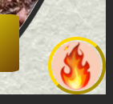
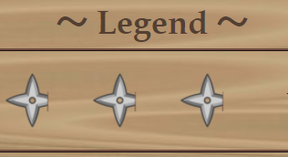
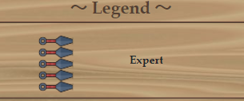

What's this website?
What's this website?
Welcome! It's the developer Tommy writing here! This website is a kind of portfolio to introduce myself. I made this site to study new technologies and appeal my ability of making fabulous websites to my potential customers.
To make this website, I bribed my wife with Wacom Cintic 16 FHD and Crucial 16GB DDR4-2666 SODIMM . Thus she was employed as my special illustrator. She created each Yokai and some awesome backgrounds with her creativity. Therefore this website is an art fusion of a couple. I hope you enjoy not only my techniques but the soulful detailed illustrations of my wife!
What's the main concept?
What's the main concept?
This is the deepest concept of this site. In the phase of basic design, I researched a lot of extraordinary superior websites which other skillful enginner made with maniac enthusiasm; which made me overwhelmed and doomed.
I lost all my confidence and wanted to disappear like a piece of chocolate in front of my wife when she is irritated. But I couldn't abandon my beloved wife whom I called from Brazil; the farthest place from Japan and my student loan which never-ending more than 15 years from now.
Therefore, I gave up to give up and get ready to compete with the powerful opponents whom I once got frightened. You know it's a jungle fullfilled with super-size predetors. This little Asian with mere 180cm height needs some strategy to survive.
To tell the truth, I was stuck. I came up with nothing on my mind. It is waste of time to continue thinking. Do you know what oriental people do the next in such cases? We try to learn from animals, like some styles of Kung Fu. Traditional biomimetics. That’s why I started to play Spider-Man.
That was a quite proper approach to find a resolution. Immitating a super hero, I remembered a precious point; he is also a “friendly-neighborhood”. It’s a must to have a great power to join as a reliable staff who complete a great responsibility. However Spider-Man is beloved for not only his might but also his cheerful witty personality that can overcome any vilans or poverty. I pledged myself to be such a macho man who can entertain people and bring the dawn to this darkened world. Therefore, I decided the main concept to save the world.
I put all my passions to entertain you like the examples of "Check it out" section below. I recommend to go back again to the other page you've visited if you didn't notice my hidden thoughts. In the case you are intrigued by the developer, shall we get down to the business?
Check it out
Check it out
You've already noticed some of my entertaining points, but what about below? I hope you can enjoy my work twice ;)
- Serifs @/home etc...
-
This is main entertainment of this site.
My characters can speak by the modal.
The serif function has three features.
- Selection
- Transition
- Typewriting display
- Map Moving @/home
- You can walk around each room by clicking or tapping the arrows on map area, and encounter another characters! Some characters may take you to special pages, the others might tell you the secret of this haunted house...
- Card Changes @/aboutme
-
Did you notice that the pointer changes on the element of my card?
This means what you see; you can click it.
When you can click it, you would see the unknown aspects of the creator.
For your information, the card would change when you reload in About Me page.

- Skill Board Shuriken @/aboutme
-
In fact, the shuriken which shows my strengths of each item,
would change from Ninja Star into Kunai.
If you can resize the window of browser, they would transform to another form.

- Whose eye? Whose mouths? @/aboutme
- I'm sorry that you might scared when you scroll at the About Me page. You might wonder that who were staring at you or smiling at you? Don't worry, they are just my eye and my wife's mouth. There are no cursed things in my site, I wish.
- Handscroll of my history @/aboutme
- As css efforts, this is most arduous work on this website... Based on a accordion, I expressed the handscroll part by assembling pillars. The golden metalic luster can be expressed by gradation of yellowish colors, FYI.
- Kabuki curtain @/character-list
- When you click or tap characters below the stage, the character would dissapear like a ghost and next time appears on the stage, with closing and opening curtain. Actually I would feel a bit shy when I choose my character, lol.
- Game Over @/error
- It is common sense that some curious hacker would try to crack a site when they like it. So I implemented a trap for the unauthorized operation like using developer tools. When you try to do bad manners, you would go to hell and have to restart from the begining. Manners maketh a man, as Galahad says. Although you dare try to go to hell, you can see the page directly from here.
Technology
Technology
I used the libraries, frameworks or services below to implement this website. At least, I'm demonstrating you my abilities about them now.
System requirements
System requirements
I expect Chrome or Firefox in latest version to browse my website. For responsive design, I confirmed with android tablet and smartphone. I'm sorry for Apple but Pixel was closer to my taste.
In the case you don't see in the recommended enviroments, you might encounter unexpected experience... Internet Explorer is dead. Let her rest in peace. I didn't prepare polyfills for grave robbers\( ^o^ )/
Acknowledge
Acknowledge
There are too many people to thank for inspiring me to make this website creative, so I write about three women as the representatives this time.
First, I want thank first the illustrator, my wife. She gave the biggest contribution through countless attractive illustrations. Without her images, this site might lose originality and indistinguishable from other ordinary site and be forgotten beyond darkness besides I waste my lifetime then would be frightened by the scare of dying in vein. I love you honey.
In the aspect of designs, I owe Princess Sakuna too much. I used their official website as the best reference. It is definitely among sophisticated masterpieces of Japanese taste design. There are lots of good sites but yours is the bestest. If you have Switch or PS4, you must rush to close my site and buy their download package. In the case you don't have none of Switch or PS4, you should buy them first.
Finally, I must appreciate Christina Aguilera, since I came up with the idea of this site while listening to Haunted Heart. Why the song is not in DAM or JoySound (Major types of Karaoke Machine in Japan) yet? I cannot practice the song! I have a right to claim it because I've already watched The Addams Family twice. And give me your autograph, please. My sister is an enthusiastic fan of you, one of your soul sisters.